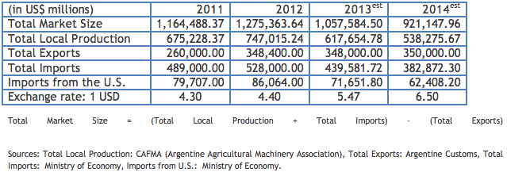

Market Estimates
Overview
Sub-Sector Best Prospects
Opportunities
Web Resources

Projected growth for 2013 and beyond has been affected by Government regulations limiting imports and access to foreign exchange.
The Argentine agricultural machinery market is growing as a result of good rain in 2012 following drought in 2011 and solid international commodity prices. The agricultural machinery market is projected at $1 billion in 2013. The agricultural machinery and equipment industry in Argentina is long-established and was one of the first industries to develop because of agriculture’s historically predominant role in the Argentine economy. Domestic production of agricultural machinery and equipment accounts for between 15 and 35 percent of the total market, depending on the product. There are approximately 130 manufacturers of a wide variety of machinery and many of them rely on imported key parts and components that present opportunities for U.S. suppliers. Distribution agreements, joint-ventures with domestic manufacturers and licensing are potential options, but U.S. firms should choose their partners carefully given that protection of intellectual property is a continuing challenge and some local Argentine firms have been known to copy patented foreign designs.
Return to Top
Irrigation Equipment: The Argentine market for irrigation systems has been growing in recent years due to the increased amount of Argentine farmland dedicated to row crops. Currently, 3.6 million acres, or less than five percent of farmland, is under irrigation. Specialists indicate that at least 20 percent of total farmland could benefit from irrigation. The U.S. dominates imports in this sector, accounting for over 50 percent of imports.
Parts and Components: This subsector currently represents approximately 10 percent of the annual sales value of tractors and harvesters, with a large number of small Argentine producers of agricultural implements and some domestic production of tractors and combines. Gradually, Argentine agricultural producers are integrating technologies that help to minimize use of agricultural inputs while not reducing yield and draw on foreign suppliers for key components. This offers opportunities in technologies ranging from precision agriculture to key components for domestically manufactured equipment such as self-propelled sprayers.
Return to Top
Products offering cost savings on the use of seed, fertilizer and agrochemicals are most in demand, especially those which incorporate a high level of nutrients in order to maintain yields and improve the quality of the products: information technology services for agriculture via wireless connections and Wi-Max networks; seeder pumps; GPS; data collection equipment for soil analysis, crop yields, remote sensing applications; and sprayer nozzles. Please note that used and remanufactured/reconditioned machinery and parts cannot be imported to Argentina.
However, recent controls imposed by the Argentine government have made exporting goods from any country to Argentina more difficult. It is important for would-be exporters to Argentina to confirm that their Argentine customer has received all the necessary permits (see “Trade Regulations and Standards” report for more information).
Return to Top
The best way to familiarize a potential local partner or buyer to a U.S. company’s product line is to exhibit in local trade shows, the largest one being Expoagro (http://expoagro.com.ar/site/en/index.php).
Advertising of specific products, parts, and equipment is normally done through web-based specialized publications:
• Agritotal - Revista Chacra (Spanish): http://www.agritotal.com/
• Infortambo (Spanish): http://www.infortambo.com.ar/
• Via Rural (Spanish): http://www.viarural.com.ar/
• Revista Super Campo: http://supercampo.perfil.com/
Return to Top